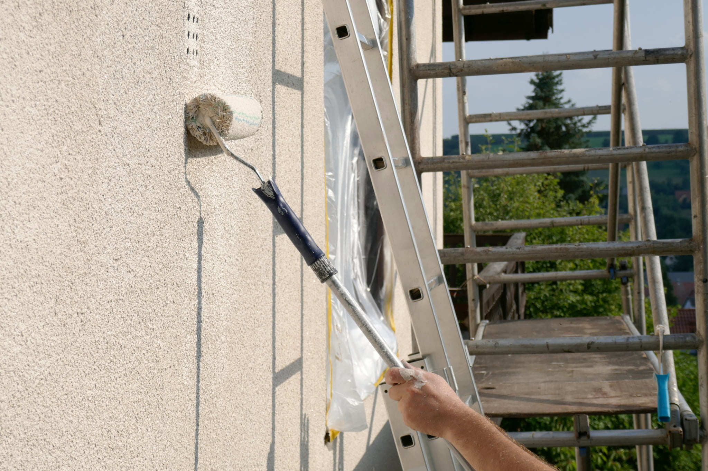
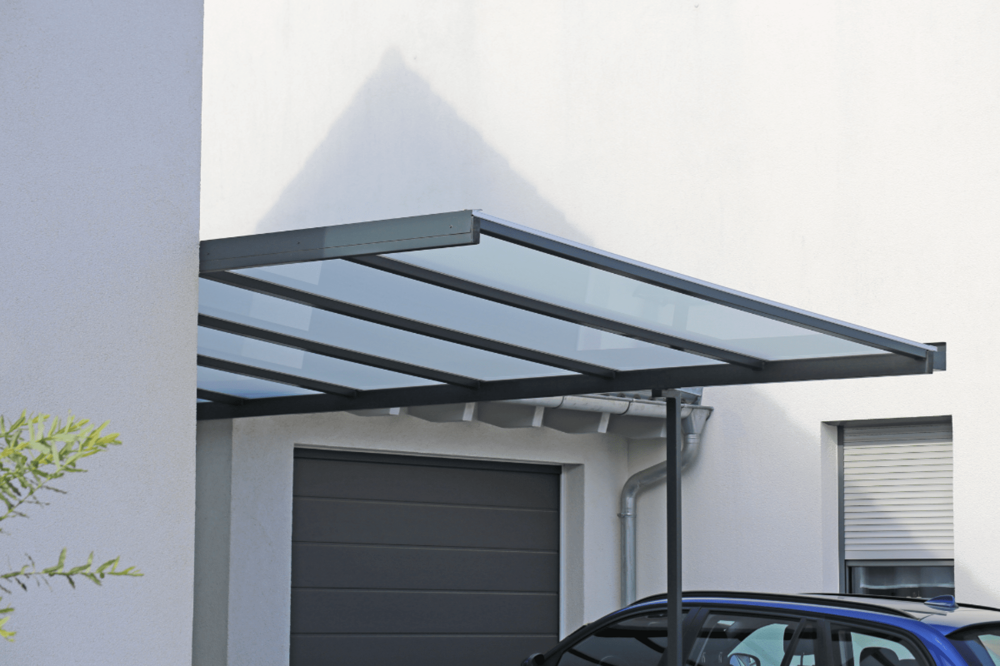
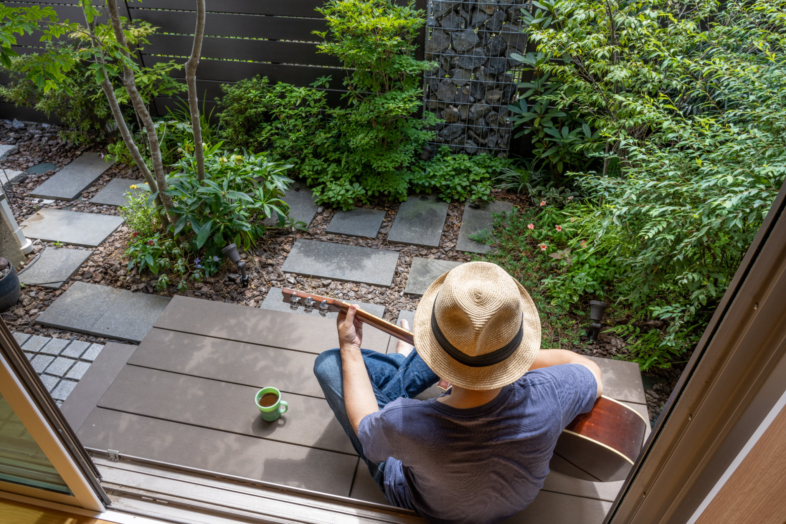
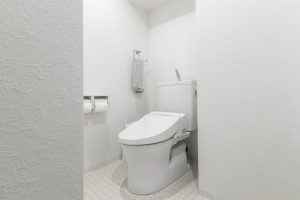
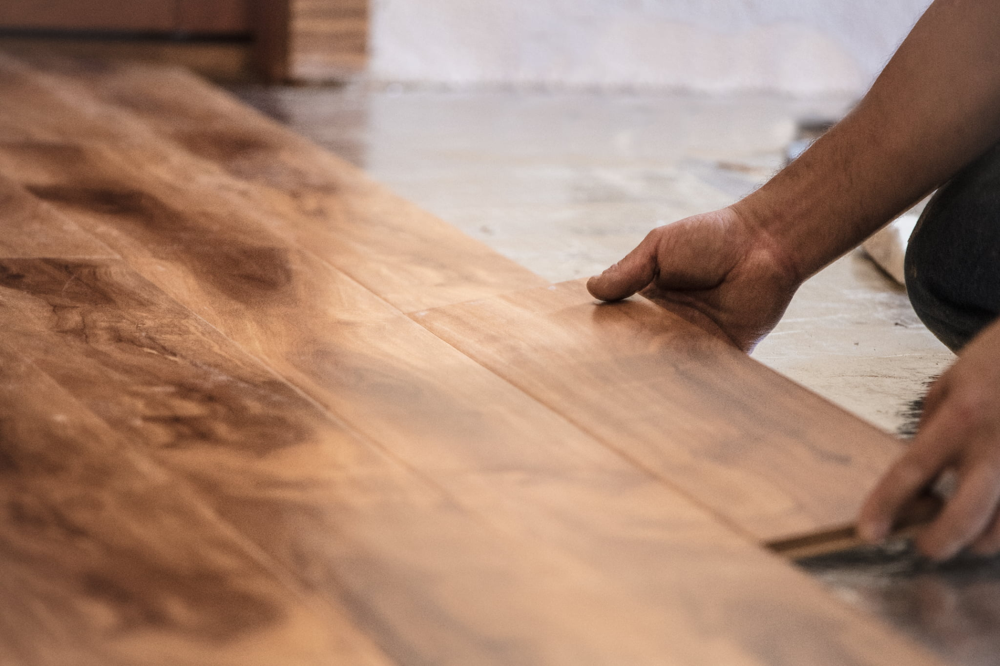

リフォーム事業
外壁塗装

外壁塗装工事では、劣化部分を補修し、新たな塗料を塗装することで、外壁から失われた保護機能を回復させることができます。
具体的には、まず高圧洗浄で汚れや藻やコケ・カビを落とし、下地処理でクラックの補修などを行ったのち、塗料を塗っていきます。
外構（カーポート）

ご家庭のお車を日々の日差し、雨、雪などからしっかりと防ぐことができます。また黄砂、鳥のフンなどの汚れも防ぐことができるのでお車のメンテナンスの軽減にも繋がります。
外構（庭）

門扉・フェンス・照明・ウッドデッキ・カーポートといったものです。 外構を設置する目的は、外から見た家を美しく際立たせることや、庭の使い勝手を良くすることばかりではありません。毎日目にする庭をより快適によりおしゃれにすることができます。
内装（キッチン）
キッチンリフォームの目安は10年～20年と言われています。 キッチンリフォームは、キッチンの寿命や使用状況、ライフスタイルの変化などに合わせて実施するのがおすすめです。修理だけではなく、使いやすく改善・改良するリフォームにより、快適な生活が送れるでしょう。
内装（トイレ）

トイレの交換時期は10年を目安に！ 長年一緒に使用してきた壁紙、床クッションフロアの張り替え、タオル掛けや紙巻器を取り替える、換気扇の交換なども含め、10年を目安に交換を検討されることをおすすめいたします。
内装（フローリング）

フローリングに使われる木材やクッション材などは、一度腐食すると元の状態に戻りません。 放置することでカビが生えたり、腐食が広がって無事な部分の床にまで悪影響が出たり、悪臭がしたりすることも考えられます。危険なだけでなく、内覧時のイメージも大きく低下するので、腐食している部分は床に限らず修復すると良いでしょう。 15〜20年程度を目安に張り替えを検討されることをおすすめいたします。